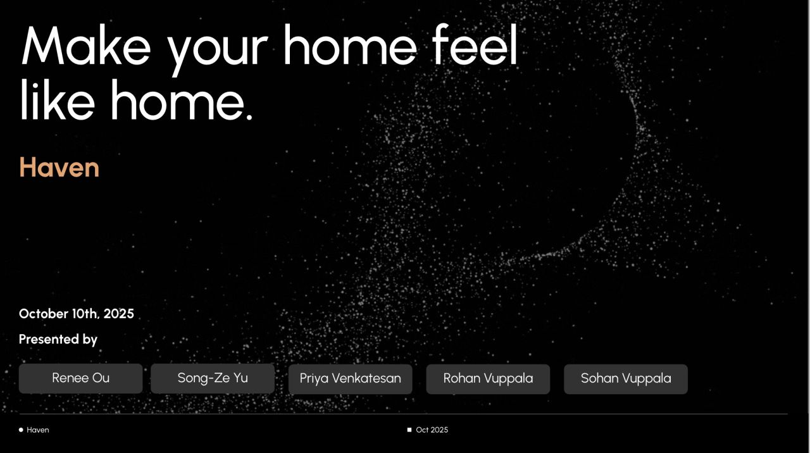
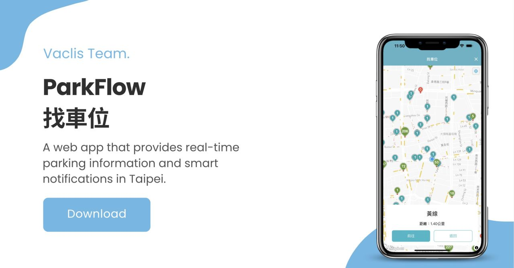
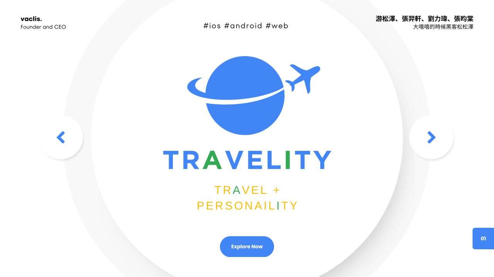

Experience
Research positions, industry work, awards, and side projects. Papers are listed on the home page.
Research
-
NTU Music and AI Lab
- Developing MIDI-REPA to improve text-to-music generation by aligning audio-model representations with symbolic musical structure.
- Investigating music understanding in audio-language models through encoder-decoder probing and task adaptation.
- Leading a collaborative music LALM project with BAIR, NVIDIA, and Prof. Hung-yi Lee; model training is underway.
-
Berkeley AI Research
- PitchBench: measuring pitch hearing in audio-language models (NeurIPS 2026 E&D).
- UniFront: time-frequency frontends for unified music and speech modeling; training audio encoders is underway.
- Anamnesis: large-scale backstory-conditioned survey simulation (EMNLP 2026 System Demonstrations).
-
Center for New Music & Audio Technologies (CNMAT)
- InstructFX2FX: multi-turn text-to-effect refinement (DAFx 2026).
- Unifying Score and Performance for fine-grained music understanding in ALMs (under review).
- MuSP-Bench: multimodal benchmarking across score and performance (ISMIR 2026 Late Breaking Demo).
-
Acoustics and Hearing Group (AHG)
- From Sound to Setting: EQ parameter prediction for piano tone replication, later shipped as the VTR-SmartEQ plugin.
Industry
-
Berkeleytime
Lead, Machine Learning Pod Jan – May 2026
- Led development and launch of the new Explore page, serving 122K+ monthly users.
- Managed a 10-member pod across technical strategy, engineering execution, task allocation, and code review.
- Led the migration from FAISS to Redis and MongoDB Vector Search, unblocking production deployment of semantic search.
Full-Stack & Machine Learning Engineer Sep 2025 – May 2026
- Built AI semantic search (BGE + FAISS) as a FastAPI microservice within the Node.js and Docker stack.
- Cut GraphQL first-load latency from 25 s to 1 s through pagination and Redis caching.
- Shipped 20+ pull requests.
-
Positive Grid
- Scrum Master for Amp-AI-SaaS, defining the agentic workflow and system architecture for audio products.
- Built two JUCE-based VST plugins and integrated an audio-to-preset model through a PyTorch inference pipeline.
- Worked on source separation and zero-shot virtual amplifier modeling.
Awards
-
Meichu Hackathon 2026
- Built GodEyes, a physical AI system that uses a world model to reconstruct a crime scene from a few photos as an explorable 3D Gaussian Splat world.
- Users walk through the scene with SLAM and on-device NPU gesture tracking on an NXP i.MX edge board.
World model (World Labs Marble) · 3D Gaussian Splatting · SLAM · Edge NPU · NXP i.MX
-
Claude × a16z × Berkeley M.E.T. Makeathon
- Built Haven in five hours, a mobile app that helps homeowners personalize their spaces by scanning their rooms.
-
Meichu Hackathon 2024
- Built Travelity, an AI travel planner driven by user interests, personality, and real-time data.
Flutter · Python · Google Maps API · Gemini
-
Taipei Hackathon 2024
- Developed ParkFlow, real-time parking information, navigation, and notifications for Taipei.
- Selected for integration into Taipei Pass, the city government’s app with 3M+ downloads; awarded NT$100,000.
Vue 3 · Flutter · Taipei Parking API · Mapbox
-
SITCON Hackathon 2024
- Developed ccDiary, an AI journaling app with emotion analysis and anonymous social features.
Flutter · Python · LangChain · PyTorch
-
WorldQuant Challenge 2024
-
NCKU Campus Speaker
- Lecture for incoming freshmen on documenting life through music; turned audience submissions into live improvised songs.



Projects GitHub ↗
-
Claude Code Remote
- Keep a desktop coding agent moving from anywhere: receive full terminal traces, reply with the next command. Five merged PRs on reliability and configurability, highlighted on X.
-
VTR-SmartEQ
- Load a reference track and the model translates its timbre into five-band EQ settings inside the DAW.
-
InningIQ
- Turns CSVs, scraped pages, and handwritten scorecards from amateur teams into structured records and visualizations, built with the NTHU baseball team.